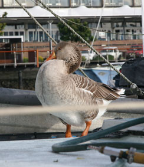
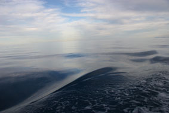
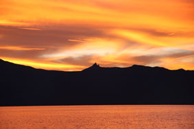
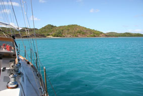
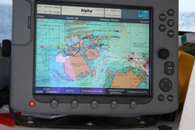
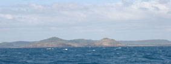
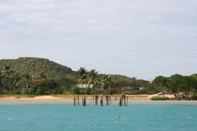

|
|
|
|
|
From Cairns to Thursday Island
Monday 9th July 2007 Time: 2200 [10pm] - written by Jean
Thursday Island Latitude: 10 35.6 S Longitude: 142 14.6 E
Hi all,
We finally managed to tear ourselves away from the comfort of Marlin Marina in Cairns on Thursday 5th July. It could be quite easy to succumb to being tied up to an arm of floating concrete securely connected to the shore.
A short stroll to the amenities block is no
hardship. The ability to use a toilet without the left foot
on the floor, the right one firmly planted half way up the
wall in front of you, left hand gripping the side of the
basin, the right one with palm flattened out on the side
wall (any combination that works is advised) as you brace
yourself for the next inevitable rock’n’roll surf through
the waves and wind. And wow! - a real shower that’s not
moving. Must confess that I did linger there for a wee while
on the morning of our departure, savouring every drop of hot
water, ensuring that my hair really was squeaky clean – who
knows when next I may have this luxury. 
Met some grand people at the Cairns Yacht Club who made us most welcome, it felt as though I was one of the locals! There is a small eclectic community of people who live on board their vessels, some with pets – one couple had two large Samyoeds (sp), another with a goose. Yep, a tame yachtie goose….with it’s own large plastic tub on deck, complete with canopy, where it would spend most of the day quietly wallowing, or on some occasions not that quietly. Other folk growing their own veggies.
And of course, the constant movement of assorted craft taking tourists out to the Barrier Reef for diving and snorkeling, fishing, swimming, lazing on beaches, parasailing – the choice is endless. Oh, and if you want something really romantic, there is always the little replica gondola to glide around in.
Enough of the land lubbing girl, got to head out on the high seas.
Life is now measured by waypoints! The journey is always thoroughly planned, pouring over the charts, carefully considering our route to ensure that it takes us safely through the many obstacles ahead, many of which lie underwater. The countless points en route are plotted on the chart as ‘waypoints’. There is a sense of achievement when you pass one and can tick it off the list. Forty seven down [needed loads to thread our way through the Barrier Reef] only thirty from here to Darwin.
Our first day out saw very little wind, the
sea was absolutely glassy, deep teal in colour 
The very next day the wind was stronger, accompanied with the expected change from glassy to ‘lumpy’ sea, but wonderful to have the sails powering us along. Highlight of this day was being on the same longitude as Melbourne just after passing our Waypoint COQ at 1348 [8 minutes to 2pm].
Saturday was a number day for me 07/07/07 and
naturally I had to do a chart plot and log entry at 0707!
Mmmm, the little things that amuse one. A little light
relief from the moments when, having not seen any other
vessels for most of the day, they all seem to appear at
night, coming in both directions and naturally in the part
of the route where 
First encounter was a large merchant ship that overtook us pretty damn close, the next was Pacific Discoverer that we called up on Radio to confirm they had seen us and would also pass on our port [left] side.
At 4am the next morning had the next encounter – two merchant ships coming down towards us, each in separate shipping lanes that then converge just ahead of where we are. The larger of the two, Endeavour River, actually radioed us [their call was to ‘The sailing vessel north of Moody Reef’] and we advised that we would ensure that we kept out of his way. No sooner had she thundered past, the next one coming down, Emerald Halo, a little ‘smaller’ vessel, crept by. Now not in the channel of our choice we had to make a quick decision on what to do because, yes, yet another ship, this time coming up behind us. Knew her name, as the other ships had been on the Radio to her, all confirming their courses and actions, and given that we needed to make a dash, as much as a yacht can dash that is, across to the other channel, called them up [one of Oz Navy warships] to advise what our intentions were. Phew….when is that wretched sun going to rise.
Made a decision on Sunday morning to break
our journey as would be prudent to set off across the Gulf
of Carpentaria with both fuel tanks full. Would not make
Thursday Island in the daylight and given that it is a
tricky place to get into, made for Mount 
Well, now it’s time for us to anchor. Wind still quite strong and not a vast amount of deep water but, round and round we went while I had a few somewhat abortive attempts at trying to control Hinewai when approaching an anchoring spot. In sheer frustration I challenged Peter – “This is my first ever time. You bloody well show me how it’s done!!” I probably shouldn’t elaborate on this, but a little later we were finally at anchor and I must confess to having a quiet smile to myself.
The guy from the fishing boat came over in his dinghy to check that we were ok and to ask if we had any ciggies with us - we gladly exchanged a packet for 6 fresh crayfish and one whole trout.
A most welcomed overnight stop and on hearing
the weather forecast for the Gulf
 
It suddenly
dawned on us how far we have already come since leaving
Melbourne. Approaching the very narrow gateway in the Ellis
Channel into Thursday Island and of course, two other much
larger vessels all heading to the same point. We were first
through and this time anchored without much ado, choosing to
do this off Horn Island 
I really must get some sleep now ahead of the next thirty waypoint journey.
Communications will be virtually impossible for the next week so, until Darwin…..
Ciao for now. Take care,
Jean
PS Thank you sooo much for the email replies. It really is very special for me to hear from you.
Next Log Page: From the Torres Strait to Darwin
|
|
|
|
|
|
|
The Crew The Route The Yacht The Log Guestbook Links Contact Us |
|
|
|
|
|
Home |
|
|
All Original Content of this Web Site Copyright © 2000, 2001, 2002, 2003, 2004, 2005, 2006, 2007, 2008, 2009 Ocean Odyssey Pty Ltd |